Ohjelmoi robotti kulkemaan ruudukon oikeassa reunassa olevalle vihreälle alueelle.
Raahaa alla olevia nuolia valkoisiin ruutuihin. Robotti kulkee käskyjonon mukaisesti loopTimes kertaa.
Käskyjonon viimeisen nuolen pitää johdattaa robotti aina sinisen viivan yli.
Vihje: voit klikata sokkelon ruutuja värittääksesi ne mustiksi.
Alla on kuvattu koko polku niin, että komentojen kunkin eri toistokerran askeleet on esitetty eri väreillä:
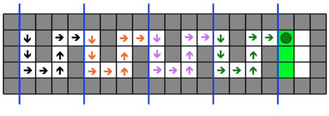
Kunkin toistokerran sisällä tehtävät askeleet vastaavat seuraavia nuolia:
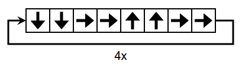
Robotti suorittaa kussakin neljässä osassa täsmälleen samanlaiset askeleet. Yritetään etsiä sellainen ratkaisu, jossa robotti siirtyy osasta seuraavaan aina ylimmällä rivillä: tällöin robotti kulkee jokaisessa osassa keskenään täysin vastaavat ruudut. Mahdollinen esteeseen törmääminen voidaan tällöin tutkia asettamalla kaikkien neljän osan esteet yhteen osaan. Tämä on esitettu alla vaiheittain. Lisätään ensimmäiseen osaan toisen osan esteet (mustina neliöinä).
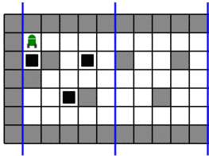
Seuraavaksi lisätään myös kolmannen osan esteet.
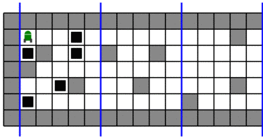
Ja lopuksi neljännen osan esteet.
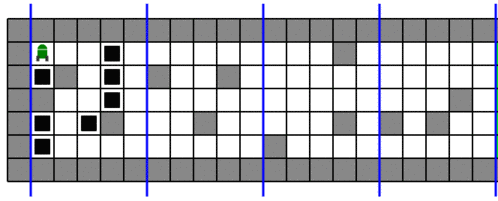
Nyt kaikkien osien esteet on huomioitu ja voimme etsiä polun, joka kulkee osan vasemmasta yläkulmasta osan oikeaan yläkulmaan törmäämättä mihinkään esteeseen. Alla on esitetty tällaisista osapoluista koostuva kokonainen ratkaisu niin, että kunkin osan sisällä kuljetut polut on esitetty eri väreillä:
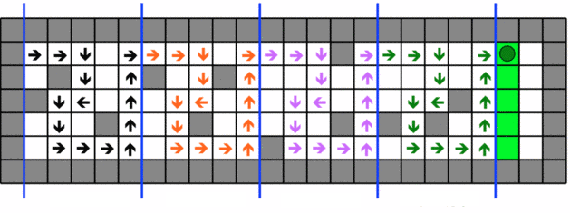
Kunkin toistokerran sisällä tehtävät askeleet vastaavat seuraavia nuolia:
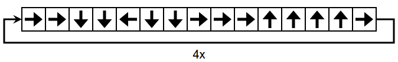
Robotti suorittaa kussakin neljässä osassa täsmälleen samanlaiset askeleet. Tässä versiossa emme voi löytää ratkaisua, jossa robotti siirtyisi osasta seuraavaan aina oikeasta ylänurkasta: toisen osan vasemmassa yläkulmassa on este. Tästä seuraa, että robotti siirtyy osasta seuraavaan alemmalla rivillä kuin mistä se tuli osaan. Koska ruudukon sisusta on 6 riviä korkea, on ainoa vaihtoehto siirtyä yksi rivi alemmas (muuten robotti törmäisi ruudukon alalaitaan). Alla olevaan kuvaan on merkitty kunkin osan alku- ja loppuruudut mustilla neliöillä.
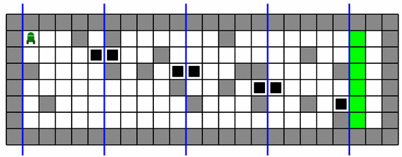
Lähdetään nyt etsimään polkua, joka yhdistää kunkin osan alku- ja loppuruudut törmäämättä esteeseen minkään osan sisällä. Toisessa osassa on pakko kiertää alakautta (muuten vastaava polku törmäisi ensimmäisessä osassa ruudun ylälaitaan). Tätä vastaavat ruudut on merkitty toiseen osaan mustilla neliöillä.
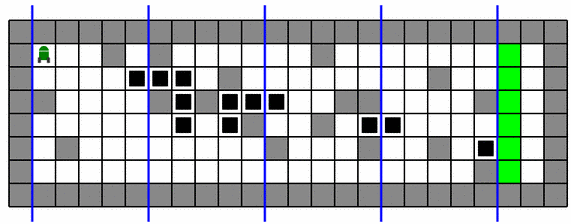
Yllä toiseen osaan osittain hahmoteltu alakautta kiertäminen ei voi edetä yhtään askelta alemmas, koska muuten vastaava polku törmäisi neljännessä osassa ruudukon alalaitaan. Alla on täydennetty toiseen osaan siitä puuttunut yksi ruutu, ja tämän toisessa osassa valmiiksi saadun osapolun askeleet on lisäksi merkitty muihinkin osiin. Ratkaisu on löydetty.
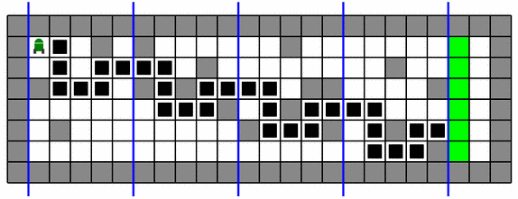
Alla on kuvattu koko polku nuolilla niin, että komentojen kunkin eri toistokerran askeleet on esitetty eri väreillä:
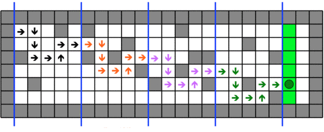
Kunkin toistokerran sisällä tehtävät askeleet vastaavat seuraavia nuolia:
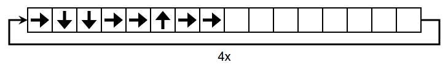
Tässä tehtävässä tutustuttiin ohjelmointiin muodostamalla robotille käskyjono, jonka toistuvan suorittamisen piti tuottaa haluttu lopputulos. Haastavampien versioiden ratkaisuissa piti lisäksi osata yhdistää useita ehtoja, jotka kunkin eri toistokerran tuottaman osapolun piti täyttää. Monissa tietojenkäsittelyn ongelmissa on tavallista, että pitää huomioida useita ehtoja samanaikaisesti.
Katso lisää esim. https://fi.wikipedia.org/wiki/Imperatiivinen_ohjelmointi.